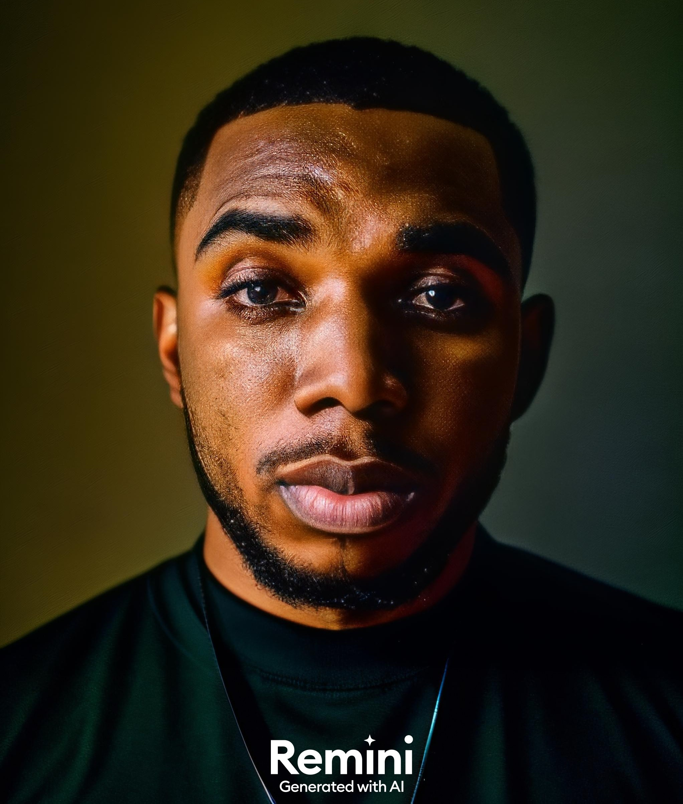

Aniekan Winner Anietie | WDD 130

Hello there! I'm an ardent full-stack developer, fueled by a burning
passion for technology and innovation. My journey in the tech world is
marked by my relentless pursuit of knowledge and the thrill of
problem-solving. I spend countless hours honing my skills, diving deep
into the intricacies of coding, and emerging with solutions that blend
creativity with functionality.
But my life isn't all about code! When I
step away from my computer, I immerse myself in the captivating world of
movies. From heart-wrenching dramas to adrenaline-pumping action films,
I relish the myriad of emotions and experiences that movies offer. They
provide a welcome respite from my coding endeavors and stir my
imagination in ways that often feed back into my work. I'm also an avid
reader, losing myself in the pages of a good book whenever I get the
chance.